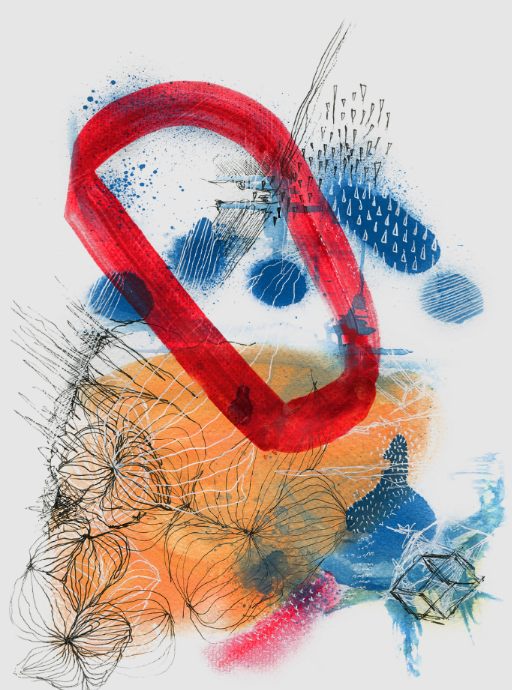

Technical Skills
Software Languages
- C, C++ – Data Structures & Algorithms (COE-428), Digital Systems (COE-328)
- Java – Object-Oriented Design & Analysis (COE-528), Library Management System
- Python – Automation scripts and mini-games
Hardware & Embedded Languages
- Verilog & VHDL – FPGA/CPU Design Projects
- Arduino (C++) – Autonomous RC Car, RFID Door Lock System
Tools & Frameworks
- Quartus, ModelSim – FPGA design & simulation
- Oscilloscopes, Logic Analyzers – Circuit design & testing
- Git & GitHub – Version control
- MATLAB – Signal analysis
- HTML, CSS, JavaScript – Web development
Currently Relearning
- Verilog FPGA development
- COE 328 – Digital Systems: Boolean algebra, sequential circuits
- Assembly & Microprocessor Systems: HCS12 programming
- ELE 404 – Electronic Circuits I: transistors & amplifiers